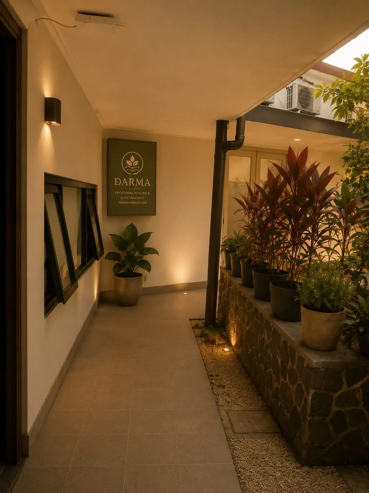

Studi Kasus: Mengatasi Panic Attack dengan Hipnoterapi di Bandung

Kisah berikut ditulis dengan izin klien dan telah dianonimkan sepenuhnya untuk melindungi privasi.
S., 34 tahun. Wiraswasta. Domisili Bandung Selatan. Menjalani 4 sesi di Hipnoterapi Bandung selama periode Agustus–Oktober 2024.
Kondisi Awal
S. datang ke Hipnoterapi Bandung setelah mengalami panic attack yang frekuensinya meningkat dalam 6 bulan terakhir. Dalam kondisi terburuk, ia mengalami 3-4 kali panic attack per minggu — jantung berdebar, sesak napas, rasa akan mati yang muncul tiba-tiba bahkan saat sedang istirahat.
Sebelumnya ia sudah mengonsumsi obat dari dokter selama 8 bulan. Obat membantu mengurangi intensitas, tapi panic attack tetap muncul dan ia merasa "bergantung" pada obat untuk bisa menjalani hari.
Proses di Hipnoterapi Bandung
Sesi 1 — Assessment & Stabilisasi
Diskusi mendalam mengungkap bahwa panic attack pertama muncul setelah sebuah kejadian di tempat kerja yang sangat memalukan — sebuah momen yang ia simpan dan tidak pernah ceritakan kepada siapapun. Sesi pertama fokus membangun rasa aman dan mengajarkan teknik self-regulation.
Sesi 2 & 3 — Pemrosesan Akar
Dalam kondisi trance terapeutik, S. mengakses kenangan yang menjadi trigger utama — dan yang mengejutkannya, ternyata ada kenangan jauh lebih tua yang serupa dari masa kecilnya. Kedua kenangan diproses dan muatan emosionalnya dilepaskan secara bertahap.
Sesi 4 — Integrasi & Penguatan
Pemrograman ulang respons otomatis terhadap trigger panic attack. Penanaman keyakinan baru tentang keamanan dan kemampuan diri. S. juga diajarkan teknik self-hypnosis untuk digunakan mandiri.
Hasil Setelah 4 Sesi
Saya tidak mengharapkan perubahan secepat ini. Setelah sesi ketiga, panic attack yang tadinya datang 3-4 kali seminggu sekarang hampir tidak muncul. Saya bahkan sudah mulai mengurangi dosis obat dengan sepengetahuan dokter. — S., klien Hipnoterapi Bandung
Baca lebih lanjut tentang bagaimana hipnoterapi menangani kecemasan dan panic attack.
Hipnoterapi untuk Kecemasan · Hipnoterapi Bandung · Konsultasi WA